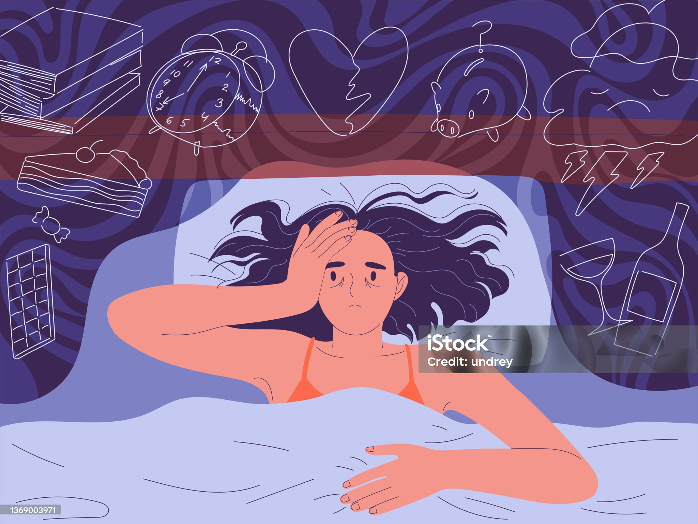

Sleep and Recovery: The Key to a Healthy Life
Why Sleep is Essential for Your Health?
Sleep is not just a break from your day; it’s an essential part of the recovery process.
A good night’s sleep allows your body to repair itself, strengthens your immune system, and helps regulate hormones that control hunger, stress, and mood.
Without adequate sleep, your ability to focus, think clearly, and manage emotions is compromised.
Whether you’re trying to build muscle, lose weight, or maintain mental clarity, sleep is the foundation that supports all of these goals.
Sleep and Fitness
Sleep plays a crucial role in your physical performance and recovery.
During deep sleep stages, your body repairs tissues, builds muscle, and releases growth hormones.
This process is vital for anyone who exercises regularly or participates in physical activity.
Without enough sleep, your workout performance can suffer, and you may experience more soreness and slower recovery times.
In fact, sleep deprivation can even affect your metabolism, making it harder to lose weight and build muscle.
To maximize your fitness results, prioritize quality sleep and aim for 7-9 hours each night.
Sleep and Mental Health
Sleep and mental health are closely linked.
Lack of sleep can increase stress, anxiety, and the risk of developing depression.
When you’re well-rested, your mind is clearer, your emotions are more balanced, and you’re better equipped to handle challenges.
Poor sleep can disrupt the brain’s ability to regulate mood, leading to irritability, low energy, and difficulty concentrating.
On the other hand, good sleep can improve cognitive function, memory, and overall emotional resilience.
If you struggle with stress or mental health, improving your sleep habits may be one of the most effective solutions.
Nutrition and Sleep
What you eat can significantly impact the quality of your sleep.
Foods rich in magnesium, such as leafy greens, nuts, and seeds, can help promote relaxation.
Herbal teas like chamomile or valerian root are known for their calming effects and may improve sleep quality.
On the other hand, consuming caffeine, alcohol, or large meals close to bedtime can disrupt your sleep cycle.
Additionally, staying hydrated throughout the day can prevent waking up in the night due to dehydration.
Understanding the connection between nutrition and sleep is key to optimizing both your sleep quality and overall health.
Practical Tips for Better Sleep
Improving your sleep doesn’t just happen overnight (pun intended!).
However, by following these tips, you can create a sleep-friendly environment and develop habits that lead to better rest:
- Establish a Routine: Go to bed and wake up at the same time every day, even on weekends. This helps regulate your body’s internal clock.
- Create the Ideal Sleep Environment: Make your bedroom cool, dark, and quiet. Consider blackout curtains, earplugs, or a white noise machine.
- Limit Screen Time: The blue light from phones, tablets, and computers interferes with melatonin production, making it harder to fall asleep. Try to avoid screens at least 30-60 minutes before bedtime.
- Relax Before Bed: Engage in calming activities like reading, deep breathing, or meditation to signal to your body that it’s time to wind down.
- Exercise Regularly: While vigorous exercise should be avoided right before bed, regular physical activity earlier in the day can help improve sleep quality.